3.4. ¿Cómo prefieres ver lo que miden los sensores?
Ya conoces el entorno y las posibilidades de programación de MakeCode.
Ahora vamos a presentarte las diferentes formas de representación de los valores detectados por los sensores.
Te sorprenderá el abanico de posibilidades que tienes para la representación de los sensores.
Recuerda que antes de empezar debes estar relajada o relajado.
¡Ánimo que seguro que eres capaz de hacerlo genial!
1. ¿Cómo se pueden representar las salidas de los sensores?
Podemos representar los valores de los sensores de la micro:bit de alguna de las siguientes formas:
Gráfica en matriz de LED
En este caso representaremos de formagráfica el valor detectado por el sensor de la placa a través de la matriz de led en tiempo real.
La matriz de led mostrará un gráfico de barrasverticales basado en los valores "valor" y "alto". Si "alto" es igual a cero, el gráfico se ajusta automáticamente.
En este caso utilizaremos el siguiente bloque de programación dentro de la categoríaLED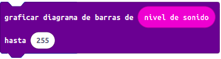
Si agregamos los datos correspondientes al sensor deseado obtendremos en la matriz de led de nuestra placa micro:bit un diagrama de barras que cambiará en función de las lecturas del sensor, parecido a la siguiente imagen:
Valores en la matriz de LED
En este caso, la lecturanumérica del sensor se representa directamente a través de la matriz de led de la placa, en tiempo real.
La forma de programar será similar para los distintos sensores.
Utilizaremos el bloque ubicado en la categoríaBásico.
Introduciendo cada uno de los bloques de programación que representan las lecturas de los sensores de la placa situados dentro de la categoría de Entrada.
De esta forma tendríamos bloques de programación como los siguientes para cada una de las lecturas de los sensores de la micro:bit.
Una vez completemos el programa con los bloques correspondientes al sensor deseado obtendremos su lectura numérica en la matriz de led de nuestra placa micro:bit en tiempo real, parecida a la imagen anterior.
En el siguiente vídeo puedes ver el proceso para mostrar el valor de la temperatura en la matriz de leds de la placa.
Iconos o animaciones en la matriz LED
Puedes hacer que dependiendo de la lectura detectada por los sensores aparezca en la matriz de LEDs iconos o animaciones.
El entorno MakeCode cuenta con una serie de iconos predefinidos, en el bloque mostraricono dentro de la categoría Básico.
Puedes animarte a crear tus propios iconos y animaciones para que aparezcan en la pantalla del robot.
En la siguiente hoja cuadriculada de 5x5 puedes diseñar tus propios iconos:
Si necesitas ayuda para crear tus propios iconos y animaciones, puedes pulsar acceder a la siguiente entrada de blog "Character Design with Microbit" donde nos explican cómo crear iconos y animaciones.
Actuador de la placa
También es posible representar las lecturas detectadas por los sensores en los actuadores incluidos en la placa micro:bit.
Por ejemplo, vamos a hacer que la placa emita un sonido sólo cuando el nivel de luz detectada por el sensor sea superior a un valor determinado.
En este caso elegimos una combinación de bloques de programación que nos permitan reproducir las continuas lecturas del sensor en el comportamiento del actuador.
Los bloques de programación serían similares en el caso del resto de sensores y dispositivo de salida elegido.
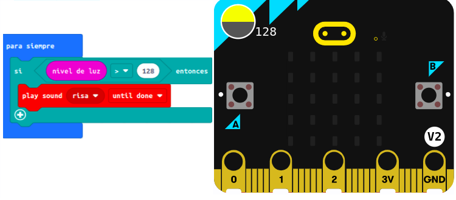
Actuador externo a la placa
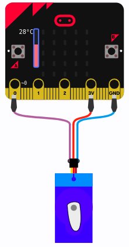
En este caso representamos las lecturas del sensor en un actuadorexterno, algo parecido a lo que pasa en un aparato de medida como un termómetro.
Los actuadores externos más usados suele ser LED, zumbador, servomotor, entre otros.
Los bloques de programación serán diferentes dependiendo del actuador externo elegido. En el caso de un servomotor, se debe elegir
En el caso de un servomotor debemos instalar su extensión en MakeCode denominada "Servos" para que aparezca la categoría con sus bloques de programación.
Realizamos el montaje del servomotor al pin 0, 3V y GND. Mediante el siguiente bloque conseguiremos representar las lecturas de un sensor (temperatura) mediante movimientos del servomotor.
Las variaciones en las lecturas del sensor se verán reflejadas en movimientos del servo.
Representación gráfica
A continuación, vamos a ver otra forma de representación de las lecturas de un sensor. En este caso, haremos que los valores de lectura del sensor sean registrados para su representacióngráfica.
La placa micro:bit es capaz de registrar y representar de forma gráfica los valores detectados por sus sensores. Además, también ofrece la opción de enviar estos datos a la consola del monitor serie tu ordenador a través del puerto serie (interfaz de comunicación que transfiere bit a bit), gracias a la conexión por cable entre ambos o por radio gracias a las comunicaciones inalámbricas de la micro:bit.
Para ello, debemos escribir los datos detectados por el sensor en el puerto serie, utilizaremos los bloques disponibles en la categoríaSerial que puedes encontrar al desplegar "Avanzado".
Usaremos el bloqueSerial escribir línea 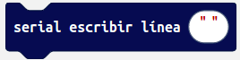para que cada dato obtenido por el sensor se envíe en una línea diferente de la consola.
En la parte inferior del simulador de micro:bit de MakeCode aparece un botón denominado mostrar datos simulador (Show data Simulador).
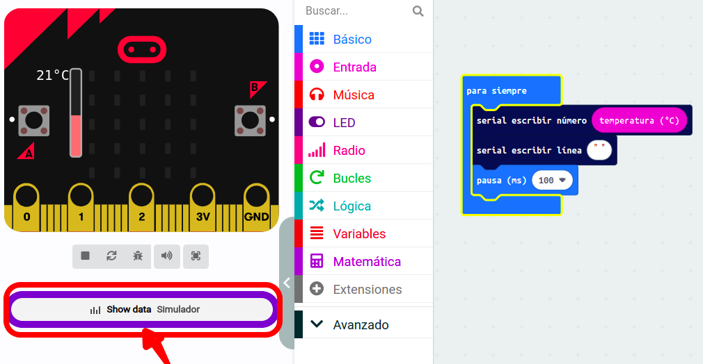
Al pulsarlo, verás en pantalla un gráfico de las lecturas en tiempo real. Si modificas las condiciones del entorno, verás lnmediatamente los cambios detectados por el sensor.
Presiona pausa y podrás descargar los datos numéricos de lectura del sensor como un archivo CSV ( Comma Separated Values, en español archivo con valores separados por comas) que puedes abrir con una aplicación de Hoja de cálculo para analizarlos o representarlos de forma gráfica, mostrando cómo varían las lecturas del sensor a lo largo del tiempo. También tienes la posibilidad de descargar el valor de las lecturas en formato texto (archivo TXT, es decir, archivo de texto plano, sin formato).
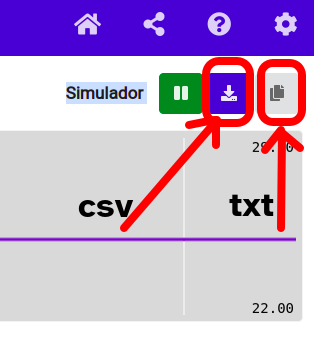
2. Veamos valores en la matriz de led
En esta actividad te propongo crear un programa que muestre las lecturas numéricas de un sensor de la placa micro:bit en la matriz de leds, en tiempo real.
Recuerda que la placa micro:bit dispone de un sensor de luz, temperatura, acelerómetro, brújula, sonido y contacto. Sigue estos pasos:
1. Elige uno de estos sensores y crea el programa.
2. Una vez que completes el programa, pruébalo en el simulador de la herramienta MakeCode.
3. Cárgalo en la placa para probar su funcionamiento en tu micro:bit.
Lumen dice ¿Necesitas ayuda con esta actividad?
Recuerda que para mostrar el valor de un sensor de la placa en la matriz de led necesitarás el siguiente bloque de programación.
Al que deberás añadir el bloque asociado a las lecturas del sensor elegido.
En el caso del sensor de temperatura será el bloque dentro de la categoría Entradas.
3. Crea un diagrama de barras de tu voz
¿Serías capaz de hacer que la placa micro:bit al detectar el nivel de sonido lo represente en un diagrama de barras en su pantalla?
Recuerda que en la categoría LED tienes un bloque para esta función.
Además de representar gráficamente el volumen del sonido, estaría genial que programaras una animación para que, si el nivel de ruido esté por encima de un determinado valor, se muestre una imagen animada en la pantalla y algún sonido o melodía. De esta forma ayudarás a que el nivel de ruido en la clase no sea alto para que el clima de la clase sea más agradable e invite a trabajar y aprender.
Lumen dice ¿Necesitas ayuda con este ejercicio?
Si no has sido capaz de elaborar correctamente este programa, este vídeo te lo explica paso a paso:
Hemos conseguido hasta ahora representar los valores de los sensores de varias formas diferentes.
Es sorprendente, ¿verdad?, pero ¿te gustaría que tu robot o sistema robótico se moviera de acuerdo a los valores detectados por un sensor?
Vamos a aprender todo lo necesario para conseguir que nuestro robot se mueva gracias a un pequeño servomotor.
4. Un servomotor que siente
Los servomotores son dispositivos muy utilizados en robótica que transforman una energía eléctrica en mecánica generando movimiento. Es muy común su uso en humanoides, brazos robóticos, puertas automáticas...
Un motor servo, a diferencia de otro tipo de motores, se puede controlar y es capaz de situarse en cualquier posición desde 0º a 180º, como si se moviese sobre un semicírculo.
En las siguientes pestañas aprenderás cómo conectarlo y cómo programarlo:
Funcionamiento
¿Sabes cómo funciona un servomotor?
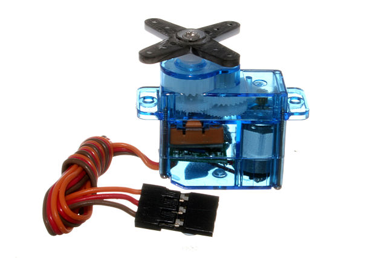Es un motoreléctrico que incorpora un sistema de control que permite regular su velocidad y posición.
Aunque inicialmente sólo permitían giros de hasta 180º, en la actualidad hay servos que permiten que su velocidad y posición sea regulada en los 360º.
Los servomotores o servos son muy usados en la robótica. Destacan porque tienen un consumo de energía reducido.
¿Cómo conectamos?
El servo cuenta con 3 cables, dos son para alimentación y el tercero es para una señal de control.
Podemos utilizar cables cocodrilo para conectar el servo a la micro:bit.
Normalmente se conecta desde Pin0, 3V y GND y se controla enviando la señal en Pin0.
Casi siempre el color del cableado es naranja = señal, rojo = 3V, marrón = tierra (GND).
¿Cómo programamos?
Para programar nuestro servomotor seguiremos los siguientes pasos:
1. Abrir un nuevo proyecto. Nombrarlo y seleccionar idioma.
2. Busca y haz clic en la categoría extensiones, dentro de todas las aplicaciones que aparecen, selecciona la denominada servo. Las extensiones en micro:bit nos permitirán realizar programas con dispositivos adicionales.
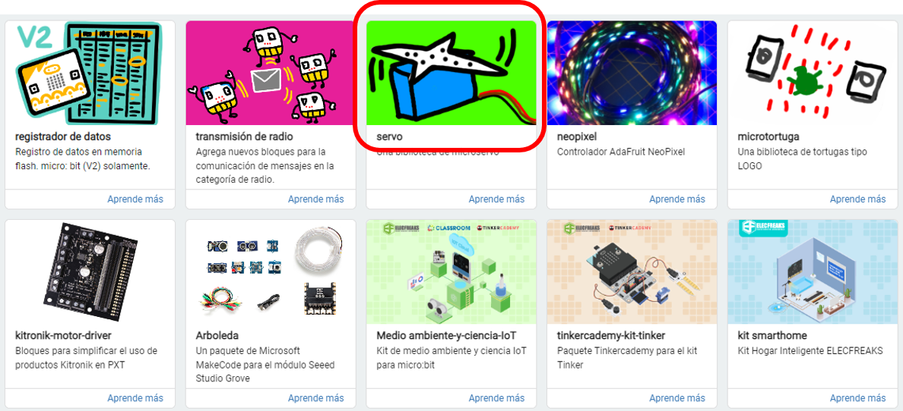
La extensión que nos interesa es la que está rodeada en rojo: servomotor.
3. Tendremos acceso a los bloques de esta categoría:
Bloque
Nombre: Función
Set servo angle: Con este bloque podremos mover el ángulo a un valor deseado.
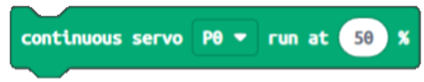
Continuous servo: Podremos controlar la velocidad de rotación continua siempre que el servo cuente con esta característica.
Stop servo: Detiene el motor servo e impide que éste siga girando.
Set servo stop on neutral: Nos ayudará a limitar la rotación del servo cuando este llegue a 90°.
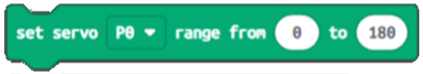
Set servo range: Este bloque nos permite indicar el rango de rotación del servo, es decir, del valor mínimo al máximo expresado en grados.
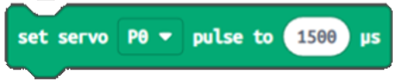
Set servo pulse to: Nos permitirá usar distintos tipos de motores con anchos de pulsos diferentes.
Vídeo
En el siguiente vídeo puedes aprender cómo conectar un servomotor a la micro:bit y cómo programarlo:
5. ¿Montamos un motor para ver los valores?
Te propongo representar las lecturas de un sensor de la placa micro:bit en un servomotor (actuador externo) en tiempo real.
Recuerda que la placa micro:bit dispone de sensor de luz, temperatura, acelerómetro, brújula, sonido y contacto. Además, en esta actividad vamos a usar un servomotor como actuador externos a nuestra placa.
Sigue estos pasos
1. Elige uno de estos sensores de la placa que hemos nombrado.
2. Crea el programa en la herramienta MakeCode y pruébalo en su simulador.
3. Realiza el montaje físico del motor y la placa. Carga el programa en la micro:bit y comprueba su funcionamiento.
Lumen dice ¿Necesitas ayuda con esta actividad?
Para completar la actividad tienes muchas posibilidades.
Recuerda lo que hemos visto en el punto 1. ¿Cómo se representan las salidas de los sensores? de esta página.
Los bloques de programación serían similares en el caso del resto de sensores.
Una de las opciones es que elijas el sensor de temperatura de la placa y que los valores detectados se representen mediante movimiento del servomotor, como en la siguiente imagen.
6. Descubrimos que los sensores se pueden mover
Hemos aprendido a utilizar un servomotor para representar las lecturas de los sensores en movimiento de nuestro sistema robótico.
En las siguientes opciones hay ejercicios para que practiques con el uso de un servomotor con la placa micro:bit. Realiza aquellas en las que te sientas más cómoda o cómodo. Si lo deseas puedes hacerlos todos.
Opción A: ¿Para qué sirve este bloque?
Lee y elige la opción correcta dentro de la lista desplegable.
Opción B: ¿Cómo quieres que gire?
Realiza un programa en el que el servo se posicione a 180º cuando presionemos el botón A y gire hacia la posición de 0° cuando presionemos el botón B.
No olvides comprobar el programa en el simulador antes de descargarlo.
Opción C: Tu movimiento refleja lo que sientes
Elabora un programa en el que asocies la lectura de un sensor a un movimiento, por ejemplo:
Cuando pulses el botón A y se muestre una sonrisa en la pantalla de leds se produzca un giro en el servomotor. Imagina cuál puede ser ese movimiento en tu sistema robótico o robot: movimiento de un elemento sujeto al eje del servo, de un brazo, una pierna, del cuello, de una ceja... En función del movimiento que hayas imaginado necesitarás hacer otro giro en sentido contrario, repetir varias veces el movimiento, etc.
Cuando pulses el botón B se muestre una mueca de tristeza y cambie el sentido del movimiento o se pare.
7. ¿Probamos otro actuador externo?
Te propongo representar las lecturas de un sensor de la placa micro:bit en un actuadorexterno diferente al ejercicio anterior.
Recuerda los sensores y actuadores de la placa micro:bit. Para esta actividad, elige un sensor y actuador externo diferente al que elegiste en el apartado anterior. Sigue estos pasos:
1. Crea el programa en la herramienta MakeCode y pruébalo en su simulador.
2. Realiza el montaje físico del actuador elegido y la placa.
3. Carga el programa en la micro:bit y comprueba su funcionamiento.
¡Seguro que lo haces muy bien!
Lumen dice ¿Necesitas ayuda con esta actividad?
Al igual que en el apartado anterior, tienes múltiples opciones de representación.
Una posibilidad puede ser que el actuadorresponda cuando el sensordetecteunvalor determinado.
Por ejemplo, podría ser que un altavoz externo emita un sonido cuando el micrófono detecte un sonido elevado.
Los bloques de programación serían similares en el caso del resto de sensores y dispositivo de salida elegido.
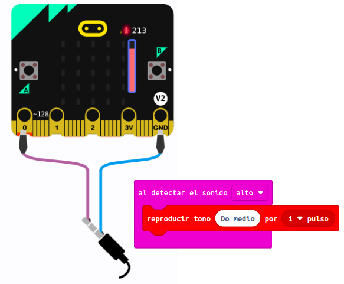
8. ¡Ahora te toca a ti!
En esta actividad vamos a trabajar de forma individual. Sigue estos pasos:
1. Elige uno de los sensores de la placa micro:bit, entre el sensor de temperatura, luz, acelerómetro, sonido, o la brújula.
2. Crea un programa en la herramienta MakeCode para registrar los valores detectados por el sensor elegido.
3. Varía las condiciones del entorno (reales o simuladas por la herramienta MakeCode) para obtener variaciones en las lecturas recogidas y envía los datos registrados a tu ordenador, portátil o tableta a través del puerto serie, gracias a la conexión por cable entre ambos dispositivos.
4. Representagráficamente en tu cuaderno, tableta u ordenador, los datos registrados por el sensor de tu placa micro:bit en función del tiempo.
Lumen dice ¿Necesitas ayuda con esta actividad?
Si no sabes cómo empezar la actividad, recuerda lo visto sobre representación gráfica en el punto 1.¿Cómo se pueden representar las salidas de los sensores? de esta misma página.
Motus dice ¿Te has equivocado en algo al hacer la actividad?
Cuando queremos aprender algo, lo normal es equivocarse al principio. Fallar forma parte de aprender. ¿Recuerdas cuando montaste en bici por primera vez? ¿o cuando intentabas nadar en el agua? Seguro que al principio no fue fácil, pero cada vez que fallabas, lo intentabas de nuevo. Con cada fallo aprendemos del error y lo mejoramos para la vez siguiente.
Para aprender de tus errores sigue estos consejos:
Me doy cuenta de en qué parte he fallado.
Busco la forma de mejorar ese error.
Lo intento de nuevo.
Entiendo que el error es importante para aprender.
No lo olvides: cuando te equivocas una vez, aprendes para el siguiente intento.


 Las variaciones en las lecturas del sensor se verán reflejadas en movimientos del servo.
Las variaciones en las lecturas del sensor se verán reflejadas en movimientos del servo.


 En esta actividad te propongo crear un programa que muestre las lecturas numéricas de un sensor de la placa micro:bit en la matriz de leds, en tiempo real.
En esta actividad te propongo crear un programa que muestre las lecturas numéricas de un sensor de la placa micro:bit en la matriz de leds, en tiempo real. El servo cuenta con 3 cables, dos son para alimentación y el tercero es para una señal de control.
El servo cuenta con 3 cables, dos son para alimentación y el tercero es para una señal de control.


 Te propongo representar las lecturas de un sensor de la placa micro:bit en un actuador externo diferente al ejercicio anterior.
Te propongo representar las lecturas de un sensor de la placa micro:bit en un actuador externo diferente al ejercicio anterior. En esta actividad vamos a trabajar de forma individual. Sigue estos pasos:
En esta actividad vamos a trabajar de forma individual. Sigue estos pasos: